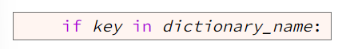

More information below
A Python program can store many items in a dictionary. Each item in a dictionary is a key value pair. Each key within a dictionary must be unique. In other words, no key can appear more than once in a dictionary. Values within a dictionary do not have to be unique. Dictionaries are mutable, meaning they can be changed after they are created. Dictionaries were invented to enable computers to find items quickly.
The following table represents a dictionary that contains five items (five key calue pairs) Notice that each of the keys is unique.
We can create a dictionary by using curly braces ({ and }). We can add an item to a dictionary and find an item in a dictionary by by using square brackets ([ and ]) and a key. The following code example shows how to create a dictionary, add an item, remove an item, and find an item in a dictionary.
Line 15 in the previous code example, adds an item to the dictionary. To add an item to an existing dictionary, write code that follows this template:
Notice that line 15 follows this template.
Line 32 in the previous code example, uses the Python membership operator, which is the keyword in, to check if a key is stored in a dictionary. To check if a key is stored in a dictionary, write code that follows this template:
Notice that line 32 follows this template.
Line 36 in the previous code example, finds a key and retrieves its corresponding value from a dictionary. To find a key and retrieve its corresponding value, write code that follows this template:
Notice that line 36 follows this template.
A simple value is a value that doesn't contain parts, such as an integer. A compound value is a value that has parts, such as a list. In example 1 above, the students dictionary has simple keys and values. Each key is a single string, and each value is a single string. It is possible to store compound values in a dictionary. Example 2 shoes a students dictionary where each value is a Python list. Because each list contains multiple parts, we say that the dictionary stores compound values.

The reason Python dictionaries were developed is to make finding items easy and fast. As explained in example 1, to find an item in a dictionary, a programmer needs to write just one line of code that follows this template:
That one line of code will cause the computer to search the dictionary until it finds the key. Then the computer will return the value that corresponds to the key. Some programmers forget how easy it is to find items in a dictionary, and when asked to writed code to find an item, they write complex code like lines 24-28 in example 3.
Compare the for loop at lines 24-28 in the previous example to this one line of code.
Clearly, writing one line of code is easier for a programmer than writing the for loop. Not only is the one line of code easier to write, but the computer will execute it muc, much faster than the for loop. Therefore, when you need to write code to find an item in a dictionary, don't write a loop. Instead, write one line of code that uses the square brackets ([ and ]) and a key to find an item. Example 4 shows the correct way to find an item in a dictionary.

Occasionally, you may need to write a program that processes all th items in a dictionary. Processing all the tiems in a dictionary is different than finding one item in a dictionary. Processing all the items is done using a for loop and the dict.items() method as shown in example 5 on line 25.
Even though the code works, we can combine lines 25-27 into a single line of code by using a Python shortcut called unpacking. Instead of writing lines 25-27, like so:
We can write one line of code that combines the three lines of code and unpacks the item in the for statement like this:
Example 6 contains the sname code as example 5 except example 6 uses the Python unpacking shortcut at line 25.
It is possible to convert two lists into a dictionary using the built-in zip and dict functions. The contents of the first list will become the keys in the dictionary, and the contents of the second list will become the values. This implies that the two lists must have the same length, and the elements in the first list must be unique because keys in a dictionary must be unique.
It is possible to convert a dictionary into two lists by using the keys and values methods and the built-in list function. The following code example starts with two lists, converts them into a dictionary, and then converts the dictionary into two lists.